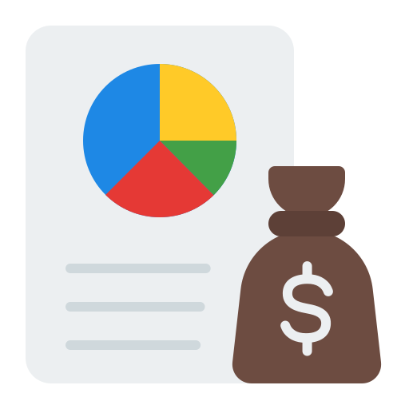

Hasan Mıhalıçlı
Makine Mühendisi
Mekanik tasarımı yazılımın gücüyle birleştiriyorum.
Python ve SolidWorks API kullanarak manuel CAD süreçlerini
otomatize ediyor,
üretim maliyetlerini anlık hesaplayan ve mühendislik verimliliğini artıran özel masaüstü yazılımları
geliştiriyorum.
Klasik mühendislik problemlerine, kod tabanlı modern çözümler üretiyorum.

Mizan
Maliyet Hesaplama AracıÜretim maliyetlerini anlık hesaplayan ve mühendislik verimliliğini artıran özel masaüstü yazılımım.